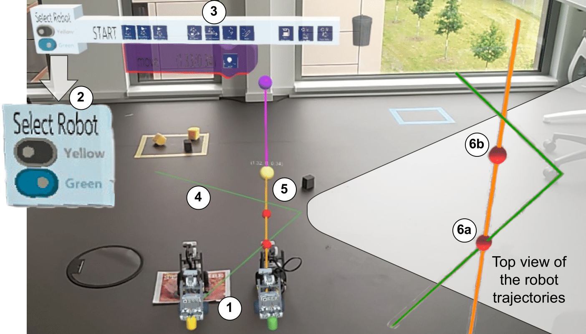

Augmented Reality-Assisted Multi-Robot Programming with Collision Warning
(opens in new tab)
Venue. Mensch und Computer - Workshopband (2024)
Materials.
DOI(opens in new tab)
PDF(opens in new tab)
Abstract. Delivery tasks and environmental exploration commonly utilize multi-robot systems. However, programming robots still requires a high level of expertise and knowledge. Therefore, the application of Augmented Reality (AR) has shown promise in aiding robot programming, enabling the user to operate within the robot's space and view robot data and information. Most approaches focus on programming single-robot manipulators or mobile robots. To also offer the programming of multiple collaboratively working robots, we propose EURAPS*, an extension of the existing EURAPS framework. As a feature, we integrate a collision warning to assist the programmer in collision-free multi-robot programming. We conducted a user study to evaluate our system's effectiveness in detecting collisions among mobile robots. The results show that the collision warning assists the user in avoiding robot collisions. Further research is needed to focus on more reliable robot tracking for precise recognition and collision warning with other obstacles.
Link to this page: